Super4C
Product SKU
- SKU: DP-0040
Introduction
Super4C is a cluster-based hardware built on the Raspberry Pi CM5. This hardware supports four channels of CM5 and extends almost all interfaces of the CM5, providing users with powerful device connectivity. Additionally, the hardware integrates an ESP32 processing module, offering remote management capabilities for the entire cluster device. For convenience, this document will refer to this cluster board hardware as the "motherboard" in subsequent sections. It supports four channels of CM5 and extends almost all the interfaces of CM5, providing users with powerful device - connection capabilities. Meanwhile, the hardware also integrates an ESP32 processing module, which offers remote management capabilities for the entire cluster of devices. For the sake of convenience in explanation, this document will refer to this cluster board hardware as the "motherboard" in the following sections.
Compatible with Raspberry Pi CM5 Only
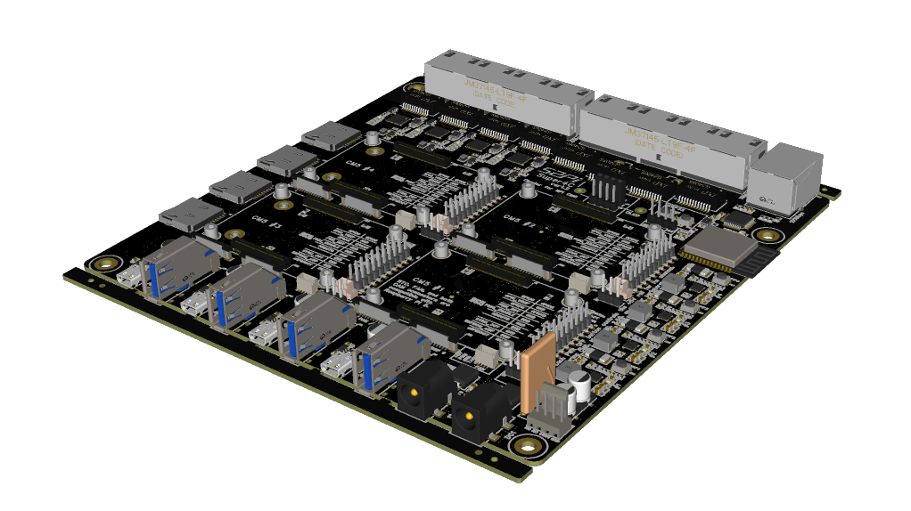
Features
- Standard mini ITX form factor
- Supports all Raspberry Pi CM5 modules
- External DC 19V/4.73A power input with redundant interface support and reverse polarity protection
- Four-channel independent DC/DC conversion to provide power for:
- Independent power reset button (simultaneously resets CM5, NVMe, 2.5Gbps, 1Gbps, SD card, CAM0/1, etc.)
- Hardware power - on delay (approximately 0.5 seconds each) to avoid inrush current from simultaneous power on
- 4 - pin fan connector (directly connected to the DC 19V power port)
- Supports up to four CM5 modules per channel, each with:
- 1x micro HDMI interface
- 1x USB 3.0 interface
- 1x USB 2.0 interface (Type - C connector, no VBUS output)
- 1x 1Gbps Ethernet interface
- 1x 2.5Gbps Ethernet interface (via USB 3.0 expansion)
- 1x microSD card interface
- 1x M.2 M - key PCIe interface
- 1x 4 - pin JST - SH PWM fan interface
- 1x RTC battery interface
- 2x MIPI DSI/CSI - 2 interfaces
- Jumper interface (to disable eMMC, EEPROM, etc.)
- Integrated ESP32 - WROOM - 32E - N4 module
- Supports 2.4GHz Wi - Fi + Bluetooth with integrated antenna
- Expanded W5500 100Mbps wired network
- 4 - pin UART download interface
- 4 - pin I2C expansion interface (for expanding OLED screens, etc.)
- Two integrated INA3221 chips for measuring voltage and current of six channels on the board
- ESP32 pins can individually control the power switch for each channel and the PMIC_EN signal switch for CM5
- BOOT/EN button
Main Power Input
The main power input uses a barrel power connector (inner diameter 2mm, outer diameter 6.6mm) with a voltage range of DC 12V-20V. Two sockets(DC1, DC2) support redundant power input. When two power supplies with different voltages are inserted simultaneously, the hardware will automatically select the power supply with the higher voltage.
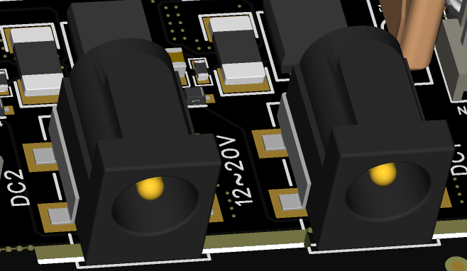
Main Power Protection
The main power supply passes through protection circuits, voltage and current sampling circuits, reverse polarity protection, and fuse circuits before powering the internal components and outputting to the J15 connector for external main fan power supply.
Note: When connecting a fan, ensure that the fan's rated voltage matches the main power supply voltage.
Internal 5V DC/DC and Buttons
The main power supply passes through four-channel DC/DC circuits to convert to 5V power, supplying each CM5 and its peripherals. Each DC/DC channel has an independent power reset button (PWR_OFF1/2/3/4). Pressing the button (SW3/4/5/6) will reset the power of each CM5 and its peripheral channel.
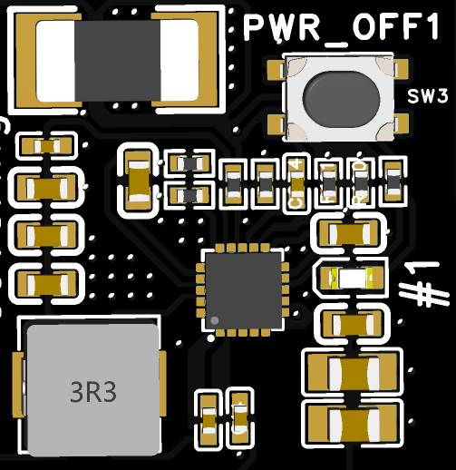
Voltage and Current Monitoring
Both the main power sockets and the four internal 5V power rails are equipped with voltage and current sensing capabilities. Through the I2C interface of the ESP32, two INA3221 chips (covering a total of six channels) are controlled to monitor voltage and current.

CM5 Modules
A total of four CM5 channels are supported, with each channel featuring identical extended interfaces, which are labeled with the numbers 1, 2, 3, and 4 on the hardware silk screen.
CM5 Connector
The standard CM5 connector is used, with a total height of 3mm below the board after installation.
micro HDMI 2.0 Interface
The standard micro HDMI interface is directly connected to the HDMI0 interface of the CM5 module. The 5V power on the interface is provided by the motherboard through a current - limiting switch.
USB3.0 Interface
The CM5 module features 2 x USB 3.0 interfaces.
On this motherboard, the USB 3.0 interface is connected to Port 0.
The interface is equipped with a current - limiting switch, which provides a maximum power supply capability of 0.9A to external devices.

USB2.0 Interface
The CM5 module has one USB 2.0 interface, which is connected to the Type-C connector on this motherboard.
This interface only connects the D+/D- signals and does not provide external power.
It can be used in conjunction with the nRPIBOOT signals to program the CM5.
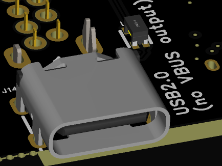
1Gbps Ethernet Interface
Connected to the CM5's native Gigabit Ethernet interface, using a standard RJ45 connector and does not support Power over Ethernet (PoE).
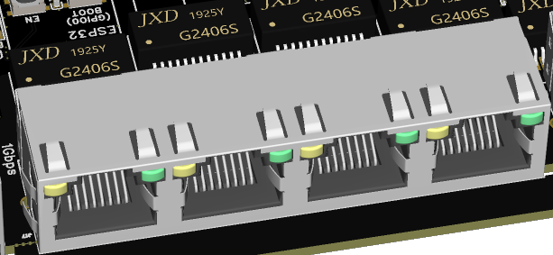
2.5Gbps Ethernet Interface
Extended from the CM5's USB3.0 Port 1, this interface also supports Gigabit and Fast Ethernet (10/100/1000Mbps) connections.
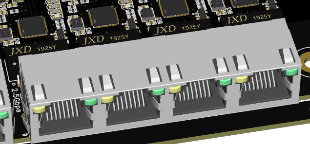
microSD Card Interface
Press-fit interface, only supports CM5 Lite version.
M.2 M-Key Interface
- Supports various M.2 M-key cards. with only PCIe signals on the interface.
ONLYsupports the 2280 form factor.
Fan Interface
Same interface dimensions and signal definitions as the Raspberry Pi Official CM5 IO Board. (compatible with Active cooler's JST cable, but do not compatible with the mouting holes)
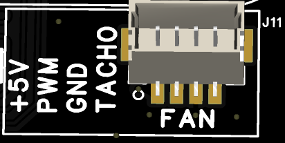
RTC Battery Interface
Same interface dimensions and signal definitions as the official CM5 IO board.
MIPI Interface
Same interface dimensions and signal definitions as the official CM5 IO board, featuring a 22-pin, 0.5-pitch FPC (Flexible Printed Circuit) connector.
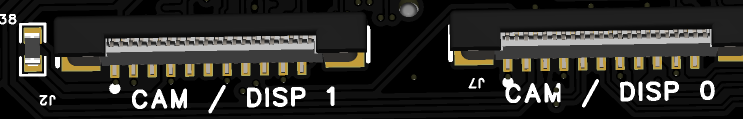
Jumper Headers
The IO voltage is by default configured to +3.3V, with pin definitions matching
the silk screen on the board. This pin header also brings out
GPIO8/GPIO9/GPIO10/GPIO11 for expansion use. Additionally, the PMIC_ENABLE
signal can be controlled via jumpers or ESP32(with different ESP32 IO Pin allocations for different CM5 Channels).
The figure below shows the jumper pins and silk - screen markings corresponding to the first - channel CM5.
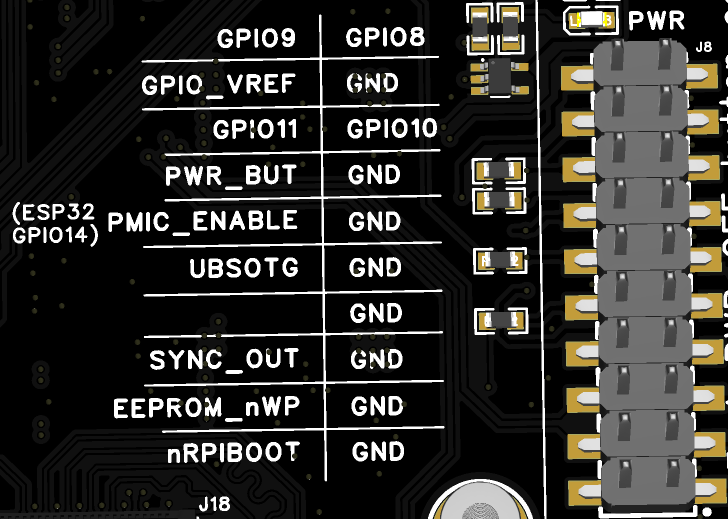
ESP32
The model of the ESP32 integrated on the motherboard is ESP32-WROOM-32E-N4.
The motherboard comes with a pre-installed basic firmware that can perform simple power control, monitor voltage and current, and display the information in real - time on an OLED screen (SSD1306).
ESP32 Pin Allocation
| Pin | ESP32-WROOM-32E | Super4C Net Name | Function / Notes |
|---|---|---|---|
| 1 | GND | GND | Ground |
| 2 | 3V3 | 3V3 | 3.3 V Power Supply |
| 3 | EN | EN | HIGH=ON (ESP32 enabled) LOW=OFF (ESP32 shut-down) Also wired to SW2 (pressed = LOW) |
| 4 | SENSOR_VP | NC | Unconnected |
| 5 | SENSOR_VN | NC | Unconnected |
| 6 | IO34 | NC | Unconnected |
| 7 | IO35 | NC | Unconnected |
| 8 | IO32 | XTAL_32K_P | 32.768 kHz crystal input |
| 9 | IO33 | XTAL_32K_N | 32.768 kHz crystal output |
| 10 | IO25 | CM5_4_PMIC_ENABLE | Channel-4 Enable HIGH=ON (default) ‑ LOW=OFF |
| 11 | IO26 | CM5_3_PMIC_ENABLE | Channel-3 Enable HIGH=ON (default) ‑ LOW=OFF |
| 12 | IO27 | CM5_2_PMIC_ENABLE | Channel-2 Enable HIGH=ON (default) ‑ LOW=OFF |
| 13 | IO14 | CM5_1_PMIC_ENABLE | Channel-1 Enable HIGH=ON (default) ‑ LOW=OFF |
| 14 | IO12 | NC | Unconnected |
| 15 | GND | GND | Ground |
| 16 | IO13 | BMC_I2C_SDA | I²C SDA → two on-board INA3221 + J12 & J6 |
| 17-22 | — | NC | Unconnected |
| 23 | IO15 | BMC_I2C_SCL | I²C SCL → two on-board INA3221 + J12 & J6 |
| 24 | IO2 | BMC_PSU1 | PSU-1 ENABLEHIGH=OFF ‑ LOW=ON (default) |
| 25 | IO0 | BOOT | Boot-strap (strapping) pin |
| 26 | IO4 | BMC_PSU2 | PSU-2 ENABLEHIGH=OFF ‑ LOW=ON (default) |
| 27 | IO16 | BMC_PSU3 | PSU-3 ENABLEHIGH=OFF ‑ LOW=ON (default) |
| 28 | IO17 | BMC_PSU4 | PSU-4 ENABLEHIGH=OFF ‑ LOW=ON (default) |
| 29 | IO5 | #SCS_W5500 |
W5500 SPI-CS (pin 32) |
| 30 | IO18 | SCLK_W5500 | W5500 SPI-CLK (pin 33) |
| 31 | IO19 | MISO_W5500 | W5500 MISO (pin 34) |
| 32 | — | NC | Unconnected |
| 33 | IO21 | #INT_W5500 |
W5500 INT (pin 36) |
| 34 | RXD0 | BMC_RXD0 | UART0 RX → J47 |
| 35 | TXD0 | BMC_TXD0 | UART0 TX → J47 |
| 36 | IO22 | #RST_W5500 |
W5500 RST (pin 37) |
| 37 | IO23 | MOSI_W5500 | W5500 MOSI (pin 35) |
| 38 | GND | GND | Ground |
ESP32 Buttons
- BOOT (SW1):
- When the BOOT button is held down while powering on the motherboard (or while powered on, hold both BOOT and EN buttons, release the EN button first, and then release the BOOT button), the ESP32 will enter programming mode. The ESP32 can then be programmed via the UART interface (J47).
-
In the default firmware, after the ESP32 starts up, the BOOT pin is used as an input IO (GPIO0). When the BOOT button is pressed for more than 1 second and then released, the ESP32 will sequentially disable the PMIC_ENABLE signals for the four CM5 modules and the ENABLE signals for the four DC/DC (5V) channels, with an interval of approximately 0.5 seconds.
-
EN (SW2):
- In the default firmware, pressing the EN button will reset all CM5_PMIC_ENABLE and DC/DC (5V) ENABLE signals.
ESP32 I2C Address
The I2C signals of the ESP32 are connected to both the J12 and J6 headers, as well as the two onboard INA3211 chips. The headers can be used to expand external I2C devices.
| Item | Channels / Pins / Address | Description |
|---|---|---|
| J12 Connector | 4-pin 2.54 mm header (GND, 3V3, SDA, SCL) | Header for plugging in an OLED module (I²C interface) |
| J16 Connector | 4-pin 2.54 mm header (GND, 3V3, SDA, SCL) | Header for additional I²C devices |
| INA3221 #1 | 3-channel • 20 mΩ shunt • I²C address 0x40 |
IN1 → DC1 IN2 → DC2 IN3 → DC/DC 5 V #1 |
| INA3221 #2 | 3-channel • 20 mΩ shunt • I²C address 0x41 |
IN1 → DC/DC 5 V #2 IN2 → DC/DC 5 V #3 IN3 → DC/DC 5 V #4 |
The pinout diagram for J12/J6 connectors is as follows:
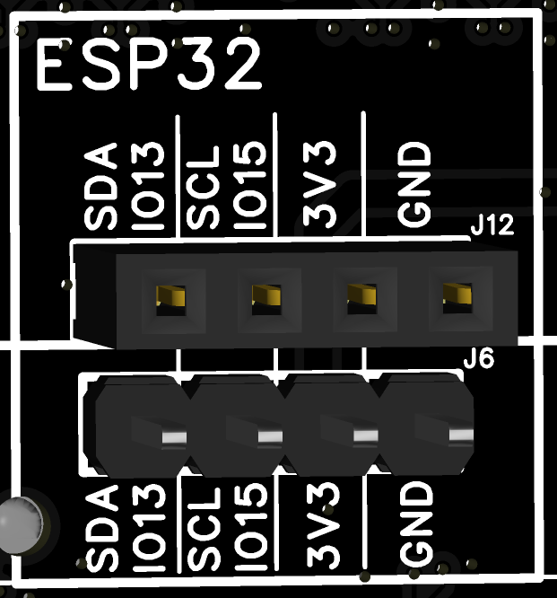
ESP32 Firmware
The ESP32 comes with default firmware that can:
- Display the current WiFi mode and corresponding IP information.
- Control the power of the four DC/DC channels and the PMIC_ENABLE signals of the CM5.
- Drive OLED display modules (SSD1306).
- Sample the current of six channels (two DC input ports and four internal 5V power supplies).
- Display the sampled current information on the OLED screen.
- Detect the network connectivity of W5500 (in firmware version _1.1.2: W5500 has not been developed for other functions):
- If connected, the OLED screen displays: | W55
- If disconnected, the OLED screen displays: | OFF
Web Controller Usage Instructions
By flashing the accompanying ESP32 firmware (with web controller functionality) onto the motherboard, remote monitoring of the motherboard can be achieved via a web interface.
Web Controller Connection Modes
- AP Mode: Before the ESP32's WiFi connects to a specific network, the motherboard will default to AP mode.
In AP mode, the OLED screen will display "AP mode" with an SSID of Super4C and a default password of 12345678 (an SSD1306 OLED module must be installed first, additional purchase required).
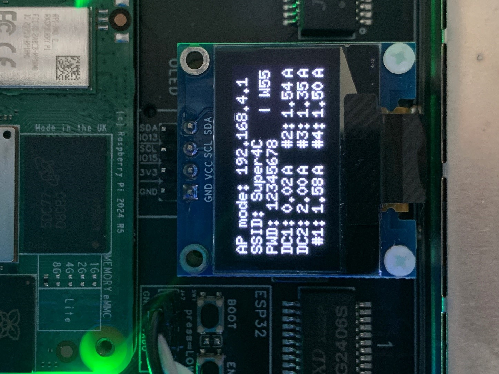
In AP mode, you can connect a computer or mobile device to the following network:
- SSID: Super4C
- Password: 12345678
After successfully connecting, enter 192.168.4.1 in a web browser to access the Web Controller page.
- Station Mode:
After accessing the Web Controller via AP mode, click the
WiFi Setupbutton on the page to enter the configuration page. - Enter the desired WiFi network (e.g., your home WiFi) in the WiFi SSID field and the password in the WiFi password field.
- Click
Save & Rebootto save the configuration and restart the device (this will take about 10 seconds). - After rebooting, the OLED screen will display the obtained IP address.o After rebooting, the OLED screen will display the obtained IP address.
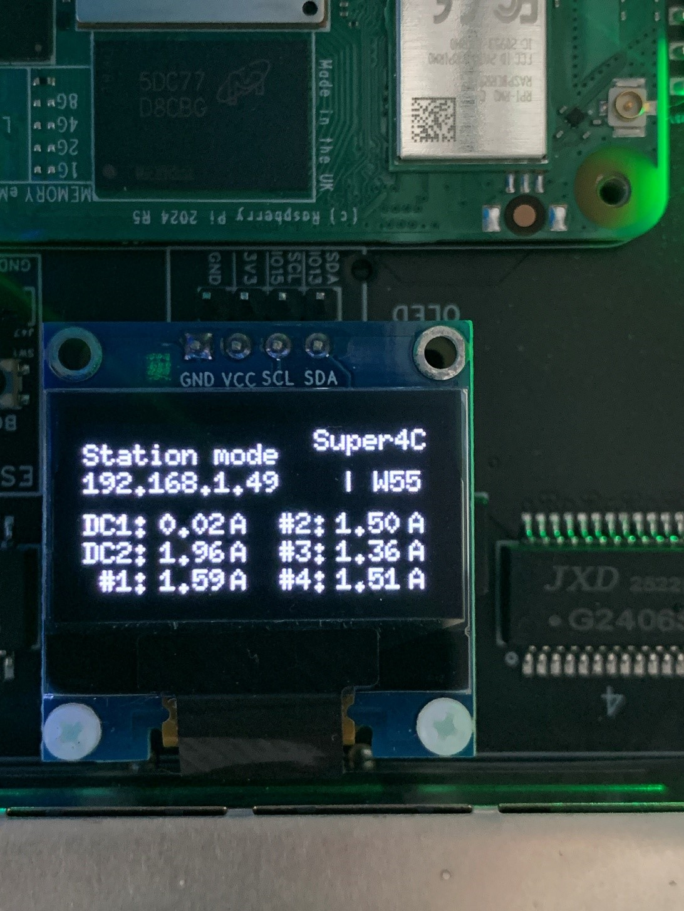
Within the same local network, use a computer or mobile device to open a web browser and enter the IP address displayed on the OLED screen (e.g., "192.168.1.49") to access the Web Controller page.
- Reset Connection Mode:
In either AP or Station mode,
holdtheBOOT buttonon the motherboard for more than 5 seconds to reset the device to AP mode. This allows users to reconnect and reconfigure the WiFi network.
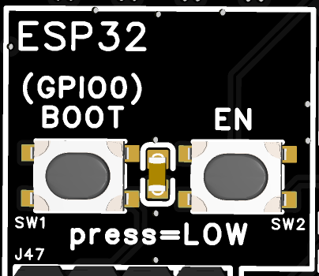
Web Controller Main Page Instructions
-
Main Display Content and Operation Buttons
-
Displays the current mode and IP address.
- Displays signal strength.
- Displays server uptime.
- Displays the current of six current monitoring channels on the motherboard.
- Buttons to independently turn on/off the four onboard main power supplies.
- Buttons to independently turn on/off the PMIC_ENABLE signals of the four CM5 channels.
- Buttons to turn all four power supplies and CM5 channels on/off simultaneously.
- Button to toggle all switches.
- WiFi settings button.

Web Controller Page Access and WiFi Configuration
- Using a computer as an example:
The Super4C's WiFi defaults to
AP mode. First, connect your computer's WiFi to the network namedSuper4Cwith the defualt password12345678. Then, enter the IP address192.168.4.1in a web browser and pressEnter.
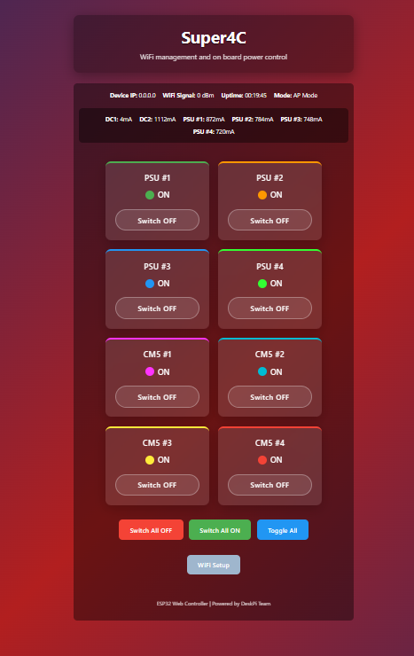
Click the gray WiFi Setup button to enter the WiFi configuration page.
Enter the desired wireless network name in the WiFi SSID field and the password in the WiFi password field.
Click the green Save & Reboot button to save the configuration to the Super4C motherboard.
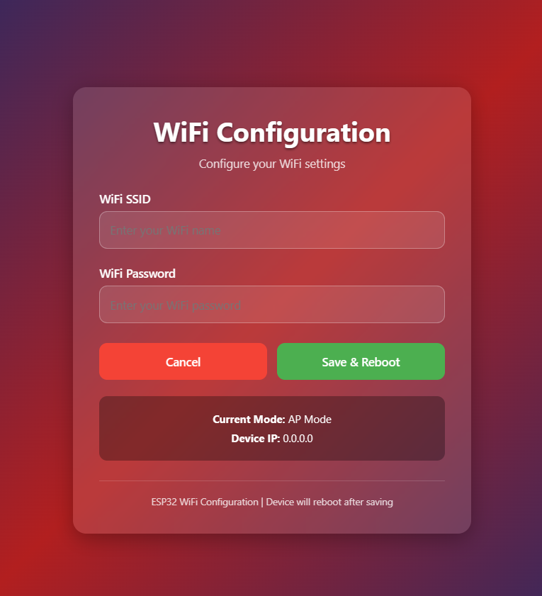
The motherboard will automatically reboot. Wait for approximately 10 seconds.
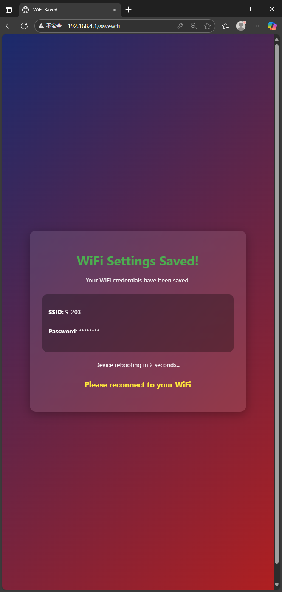
After rebooting, connect your computer to the same local network as the Super4C. Then, enter the IP address displayed on the OLED screen (e.g., "192.168.1.49") in a web browser and press "Enter". From this point, users can remotely control the power of the Super4C, monitor current, and perform other operations within the local network.
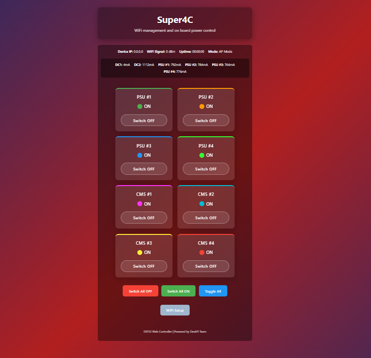
Web Controller Power Switch Button Operations
- The page has eight independent power switch buttons, including
PSU #1~4andCM5 #1~4. - The PSUs are the 5V power units on the board, with a total of four.
- Each PSU powers the CM5, NVME, SD, USB, 2.5G network, and other circuits in each channel. Therefore, turning off a PSU will cut power to all the aforementioned circuits in that channel.
- The
CM5 #1~4buttons control thePMIC_ENABLEsignals of each CM5 channel. Turning off a CM5 will only cut power to that channel's CM5, while other circuits such as NVME, SD, USB, and 2.5G network will remain powered. - To operate, click the
Switch OFForSwitch ONbuttons to perform the power actions.
When powered on, the corresponding channel status displays "ON" with a colored status light. When powered off, the corresponding channel status displays "OFF" with a gray status light.
Note: DC1/DC2 are external input power channels and cannot be controlled via switches. Do not confuse them.

- The
Switch All OFFbutton will turn off all eight switches simultaneously. Use with caution. - The
Switch All ONbutton will turn on all eight switches simultaneously.Use with caution. - The
Toggle Allbutton will toggle all switches.Use with caution.

OLED Screen Display
After connecting an SSD1306 screen:
- Displays the current WiFi mode and IP address.
- Displays the current of the six current monitoring channels on the motherboard, in units of Amps (A).
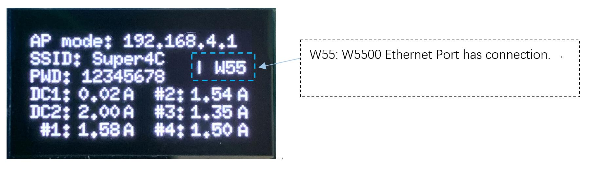

If the W5500 function is not enabled, but an Ethernet cable is connected, the screen will display "W55" when connected and "OFF" when disconnected.
Open Source
Some pages of the schematics and the ESP32 default firmware source code can be open - sourced to facilitate secondary development of the board by community enthusiasts. It will be open source once the firmware has been test out.
Diagram Block
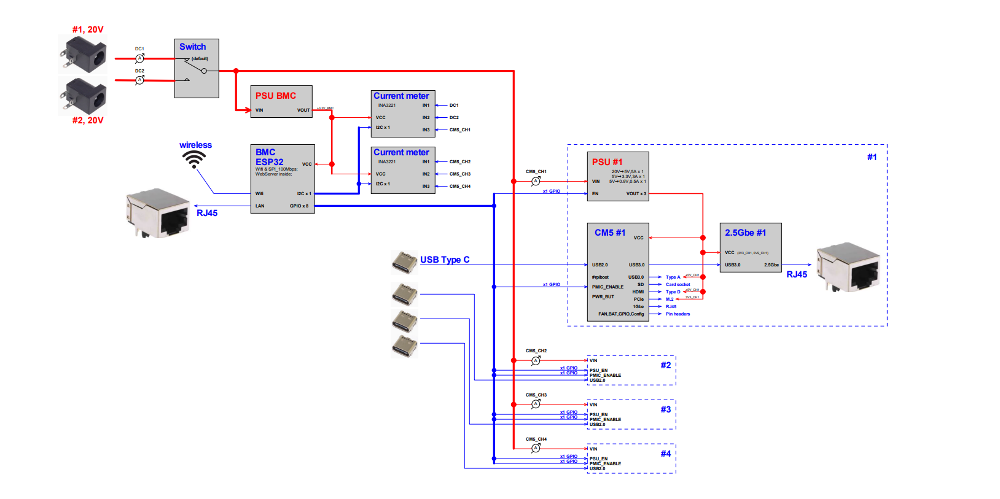
Flash an image to a Compute Module
To flash the same image to multiple Compute Modules, use the Raspberry Pi Secure Boot Provisioner. To customise an OS image to flash onto those devices, use pi-gen.
The Compute Module has an on-board eMMC device connected to the primary SD card interface. This guide explains how to flash (write) an operating system image to the eMMC storage of a single Compute Module. Lite variants of Compute Modules do not have on-board eMMC. Instead, follow the procedure to flash a storage device for other Raspberry Pi devices at Install an operating system.
Prerequisites
To flash the Compute Module eMMC, you need the following: * Another computer, referred to in this guide as the host device. You can use Linux (we recommend Raspberry Pi OS or Ubuntu), Windows 11, or macOS. * Super4C mother board. * A USB-C cable for Compute Module models flashing image.
Set up the IO Board
- 1.Connect the Compute Module to the Super4C board. When connected, the Compute Module should lie flat.
- 2.Fit
nRPI_BOOTtoGNDPin (disable eMMC Boot) on the board with jumper.
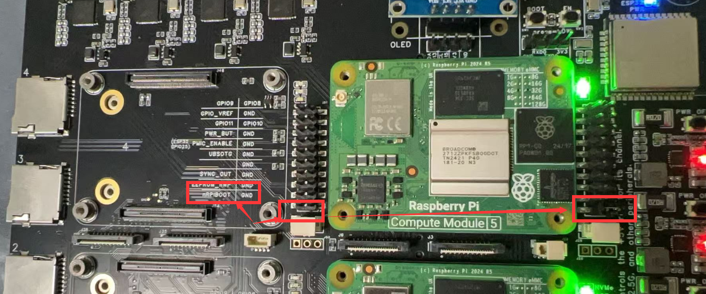
- Connect a cable from USB-C slave port J11 on the board to the host device.
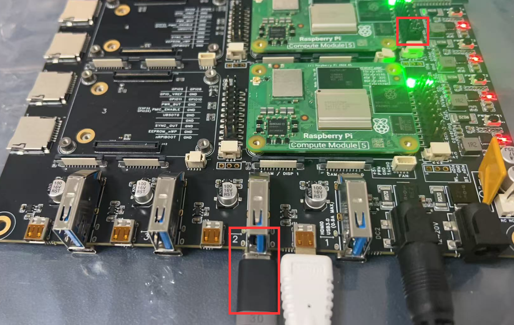
Set up the host device
Next, let’s set up software on the host device. For a host device, we recommend a Raspberry Pi 4 or newer running 64-bit Raspberry Pi OS.
For Linux:
To set up software on a Linux host device:
- 1.Run the following command to install rpiboot (or, alternatively, build rpiboot from source):
- 2.Connect the IO Board to power.
- 3.Then, run rpiboot:
- 4.After a few seconds, the Compute Module should appear as a mass storage device. Check the /dev/ directory, likely /dev/sda or /dev/sdb, for the device. Alternatively, run lsblk and search for a device with a storage capacity that matches the capacity of your Compute Module.
For macOS:
To set up software on a macOS host device:
- 1.First, build rpiboot from source.
- 2.Connect the IO Board to power.
- 3.Then, run the rpiboot executable with the following command:
For Windows:
To set up software on a Windows 11 host device:
- 1.Download the Windows installer or build rpiboot from source. Windows installer Download URL: https://github.com/raspberrypi/usbboot/raw/master/win32/rpiboot_setup.exe Build source : https://github.com/raspberrypi/usbboot
- 2.Double-click on the installer to run it. This installs the drivers and boot tool. Do not close any driver installation windows which appear during the installation process.
- 3.Reboot
- 4.Connect the IO Board to power. Windows should discover the hardware and configure the required drivers.
- 5.On CM4 and later devices, select Raspberry Pi - Mass Storage Gadget - 64-bit from the start menu. After a few seconds, the Compute Module eMMC or NVMe will appear as USB mass storage devices. This also provides a debug console as a serial port gadget.
- 6.On CM3 and older devices, select rpiboot. Double-click on RPiBoot.exe to run it. After a few seconds, the Compute Module eMMC should appear as a USB mass storage device.
Flash the eMMC
You can use Raspberry Pi Imager to flash an operating system image to a Compute Module. Raspberry Pi Imager Download URL: https://www.raspberrypi.com/documentation/computers/getting-started.html#raspberry-pi-imager Alternatively, use dd to write a raw OS image (such as Raspberry Pi OS) to your Compute Module. Run the following command, replacing /dev/sdX with the path to the mass storage device representation of your Compute Module and raw_os_image.img with the path to your raw OS image:
Once the image has been written, disconnect and reconnect the Compute Module. You should now see two partitions (for Raspberry Pi OS):
/dev/sdX <- Device /dev/sdX1 <- First partition (FAT) /dev/sdX2 <- Second partition (Linux filesystem)
You can mount the /dev/sdX1 and /dev/sdX2 partitions normally. For example: Following figure shows that how to dump the OS from Raspberry Pi’s MicroSD card to the CM5’s eMMC storage:
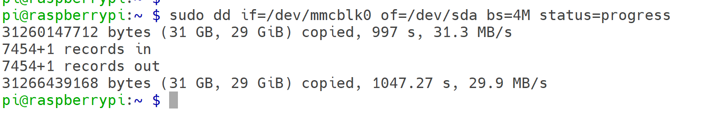
Boot from eMMC
Disconnect nRPI_BOOT from GND (disable eMMC Boot) on the super4c board jumper.
Disconnect the USB slave port. Power-cycle the super4c board to boot the Compute Module from the new image you just wrote to eMMC.
More information please visit:
Raspberry Pi Official Documentations
Application Demo
End-to-End Guide: Build & Manage a 4-Node Raspberry Pi CM5 Cluster with Ansible on Raspberry Pi 5
All previous Chinese instructions condensed, corrected, and translated into a single English document.
0. Hardware & Network Topology
| Node | Role | IP Address |
|---|---|---|
| Raspberry Pi 5 | Ansible Control Node | 192.168.10.1/24 |
| CM5-01 | Compute Module 5 | 192.168.10.11 |
| CM5-02 | Compute Module 5 | 192.168.10.12 |
| CM5-03 | Compute Module 5 | 192.168.10.13 |
| CM5-04 | Compute Module 5 | 192.168.10.14 |
1. Prepare the Control Node (ONLY this machine)
sudo apt update && sudo apt full-upgrade -y
sudo apt install -y python3-pip sshpass jq
pip3 install --user ansible-core==2.16
echo 'export PATH=$PATH:~/.local/bin' >> ~/.bashrc && source ~/.bashrc
mkdir -p ~/cm5-cluster/{inventory,group_vars,playbooks,roles,report}
cd ~/cm5-cluster
Inventory & First-Time SSH Setup
- Create
inventory/hosts.ymlGenerate & push SSH key (password login is kept):
Create playbooks/init-ssh.yml file
---
- hosts: cm5_cluster
gather_facts: no
tasks:
- name: Push public key
authorized_key:
user: pi
key: "{{ lookup('file', '~/.ssh/id_ed25519.pub') }}"
Run once:
ssh-keygen -t ed25519 -f ~/.ssh/id_ed25519 -N ''
ansible-galaxy collection install ansible.posix # only if using FQCN
ansible-playbook -i inventory/hosts.yaml playbooks/init-ssh.yml
Basic System Initialization
- playbooks/site.yml
Create roles/common/tasks/main.yml
---
- name: Expand root filesystem
shell: raspi-config --expand-rootfs
notify: reboot
- name: Set unique hostname
hostname:
name: "{{ inventory_hostname }}"
- name: Update system
apt:
update_cache: yes
upgrade: dist
- name: Install common packages
apt:
name:
- python3-venv
- python3-dev
- build-essential
- git
- htop
- vim
state: present
handlers:
- name: reboot
reboot:
Create Python Virtualenv & Install Data-Science Packages
- create
playbooks/venv.yml--- - name: Deploy Python venv with AI/ML packages hosts: cm5_cluster become: yes vars: venv_path: "/home/{{ ansible_user }}/venv" python_packages: - pandas - numpy - opencv-python - matplotlib - seaborn - xgboost - pillow - onnxruntime tasks: - name: Ensure venv directory exists file: path: "{{ venv_path }}" state: directory owner: "{{ ansible_user }}" group: "{{ ansible_user }}" - name: Create virtualenv command: python3 -m venv {{ venv_path }} args: creates: "{{ venv_path }}/bin/activate" - name: Upgrade pip pip: executable: "{{ venv_path }}/bin/pip" name: pip state: latest - name: Install packages pip: executable: "{{ venv_path }}/bin/pip" name: "{{ python_packages }}" - name: Auto-activate venv on login copy: dest: /etc/profile.d/venv.sh mode: '0644' content: | [ -d "{{ venv_path }}" ] && source {{ venv_path }}/bin/activate - Execute:
Gather Hostname, IP, Disk Information
- Create
playbooks/gather-host-info.yml--- - name: Collect hostname, IPs, disk usage hosts: cm5_cluster gather_facts: yes vars: report_dir: "{{ playbook_dir }}/../report" tasks: - name: Ensure report directory exists (locally) file: path: "{{ report_dir }}" state: directory delegate_to: localhost run_once: yes - name: Render per-host JSON file template: src: host-info.json.j2 dest: "{{ report_dir }}/{{ inventory_hostname }}.json" delegate_to: localhost - Create playbooks/templates/host-info.json.j2
{% set root = ansible_mounts | selectattr('mount','equalto','/') | first %} {"hostname":"{{ ansible_hostname }}","ipv4":{{ ansible_all_ipv4_addresses | to_json }},"disk_GB":"{{ (root.block_total * root.block_size / 1024**3) | round(2) }}","used_GB":"{{ (root.block_used * root.block_size / 1024**3) | round(2) }}","usage":"{{ (root.block_used / root.block_total * 100) | round(1) }}%"} - Run & view:
Batch Shutdown / Reboot
- Create
playbooks/shutdown.yml - Create
playbooks/reboot.yml - Execute:
Get the CPU temperature
- Create a file structure like this:
cpu_temp/
├── hosts.ini # Inventory file – list of managed hosts
├── cpu_temp.yml # Main Ansible playbook
└── templates/
└── temp_report.j2 # Optional Jinja2 template for formatted output
- Explanations:
| Directory / File | Purpose & Explanation (English) |
|---|---|
cpu_temp/ |
Root directory that contains all playbook-related files. |
hosts.ini |
Inventory file listing the managed hosts (the Raspberry Pi nodes). |
cpu_temp.yml |
Main Ansible playbook that defines the tasks to retrieve and process CPU temperatures. |
templates/ |
Directory for Jinja2 templates used to create formatted reports or files. |
templates/temp_report.j2 |
Optional Jinja2 template for generating a nicely-formatted output report. |
-
Create
playbooks/cpu_temp.yml# This playbook retrieves the CPU temperature of managed Raspberry Pi hosts. # The `vcgencmd measure_temp` command is executed on each host to get the real-time temperature. - name: Retrieve CPU temperature from managed Raspberry Pi hosts hosts: rpi gather_facts: no # Skip full fact gathering to speed up execution become: no # vcgencmd can be run by the pi user without sudo tasks: - name: Execute vcgencmd measure_temp to obtain real-time temperature ansible.builtin.command: vcgencmd measure_temp register: temp_raw # Save command output in the variable temp_raw - name: Parse temperature value (remove prefix and unit) ansible.builtin.set_fact: cpu_temp: "{{ (temp_raw.stdout | regex_replace('temp=', '') | regex_replace(\"'C\\n\", '')) }}" - name: Display temperature for each host in the console ansible.builtin.debug: msg: "Host {{ inventory_hostname }} CPU temperature: {{ cpu_temp }}°C" - name: Append results to a local summary file (optional) ansible.builtin.lineinfile: path: "./cpu_temp_summary.txt" line: "{{ '%Y-%m-%d %H:%M:%S' | strftime }} - {{ inventory_hostname }} - {{ cpu_temp }}°C" create: yes delegate_to: localhost # Run this task on the Ansible control node -
Explanations:
| Playbook Segment | Purpose & Explanation (English) |
|---|---|
--- |
YAML file start marker. |
- name: 获取树莓派管理主机的 CPU 温度 |
Name of the play; it appears in the playbook output. |
hosts: rpi |
Targets only hosts in the [rpi] group from the inventory. |
gather_facts: no |
Skips the setup module to reduce SSH round-trips and speed up execution. |
become: no |
Does not escalate privileges; vcgencmd does not require root. |
ansible.builtin.command: vcgencmd measure_temp |
Executes the temperature-retrieval command on the remote host. |
register: temp_raw |
Captures stdout, stderr, and return code of the command into the variable temp_raw. |
set_fact: cpu_temp: ... |
Uses regex to strip prefixes like temp= and the trailing 'C, leaving only the numeric value (e.g., 47.2). |
debug: msg: "主机 ..." |
Prints the formatted temperature for each host in real time on the console. |
lineinfile: ... |
Appends results to cpu_temp_summary.txt on the control node for later review or graphing. |
delegate_to: localhost |
Ensures the file-append task runs on the Ansible control node, not on the managed hosts. |
- Execute:
Quick Reference
| Action | Command |
|---|---|
| Check connectivity | ansible cm5_cluster -i inventory/hosts.yaml -m ping |
| Ad-hoc shell | ansible cm5_cluster -a "uname -a" |
| View JSON report | cat ~/cm5-cluster/report/*.json \| jq -s . |
Enjoy your fully-automated CM5 cluster!